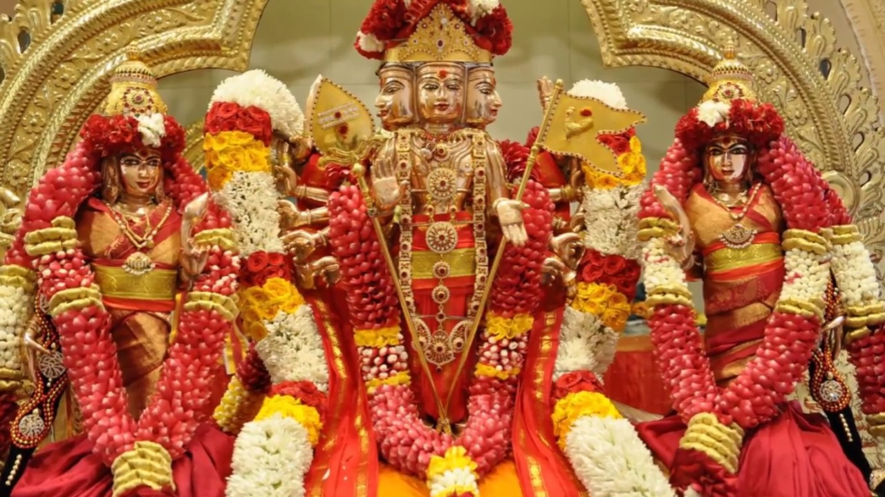

 இந்திர ராகிப் பார்மேல் இன்பமுற் றினிது மேவிச் சிந்தையில் நினைந்தமுற்றிச் சிவகதி யதனில் சேர்வர் அந்தமில் அவுணர் தங்கள் அடல்கெட முனிந்த செவ்வேற் கந்தவேள் புராணந் தன்னைக் காதலித் தோதுவோரே –நூற்பயன் அன்புடையீர் கந்தபுராணத்தை ஒருவர் படிக்க மற்றவர் அப்பாடலுக்கு பொருள் சொல்வதை நம்மில் பலர் கண்ணாரப் பார்த்தும், கேட்டும், அதன் தத்துவத்தை உணர்ந்துமுள்ளோம். சிட்னி முருகன் ஆலயத்திலும் கந்தசஷ்டி விரத காலத்திலும், வருடாந்த உற்சவத்திற்கு முன்னரும் கந்தபுராணப்படிப்பு நடைபெறுவதை அறிவோம். இச் சிந்தனைக்குரிய கந்தபுராணத்தின் சில படலங்களை மாதந்தோறும் Nov 21ம் திகதி முதல் மூன்றாவது ஞாயிற்றுக் கிழமைகளில் காலை 9.00 -11:00 மணி முதல் கந்தபுராணப் படிப்பு என்ற மரபுக்கமைய நடாத்த எண்ணியுள்ளோம். சிவனடியார்கள் அனைவரும் கந்தபுராணப் பாடல்களைப் படிப்பதில் பங்கு பற்றி இவ் நிகழ்வில் பங்குகொண்டு பயனடையுமாறு அன்புடன் வேண்டுகின்றோம். ஆரம்பம்: Nov 21 ஞாயிற்றுக்கிழமை 9.00 - 1100 மணி வரை ZOOM INVITE , Join Zoom Meeting https://us02web.zoom.us/j/87141715998?pwd=eERJVmYxTldqRVQxUVpPT1A5bng4UT09 Meeting ID: 871 4171 5998, Passcode: 897381 மேலதிக விவரங்களுக்கு: திரு மா.நாராயணன் - கைபேசி: 0412 242 752 முனைவர் ச.கணபதிப்பிள்ளை - கைபேசி: 0415 948 047 திரு க.சபாநாதன் - கைபேசி: 0408 432 680 Home